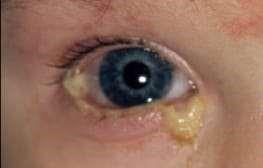

Conjunctiva · Bacterial conjunctivitis
P.C: clinical picture

Clinical picture
- Incubation period: Few hours to 3 days.
- Stage of infiltration (2-3 days): Characterized by:
- The lids: Marked edema that may close the palpebral fissure.
- The conjunctiva: Marked edema, and hyperemia and subconjunctival hemorrhage.
- Discharge: watery and mucoid discharge.
- The cornea: May show ulceration
- General manifestations: Mild fever with enlarged tender preauricular lymph nodes.
- Stage of discharge (2-3 weeks):
- Lid, conjunctiva and general manifestations are diminished.
- But there is profuse purulent discharge (Fig. 4-4).
- Chronic stage (2-3 months):
- The discharge becomes less, the edema subsides, and the redness present only in the fornices. The discharge is full of gonococci (carrier).